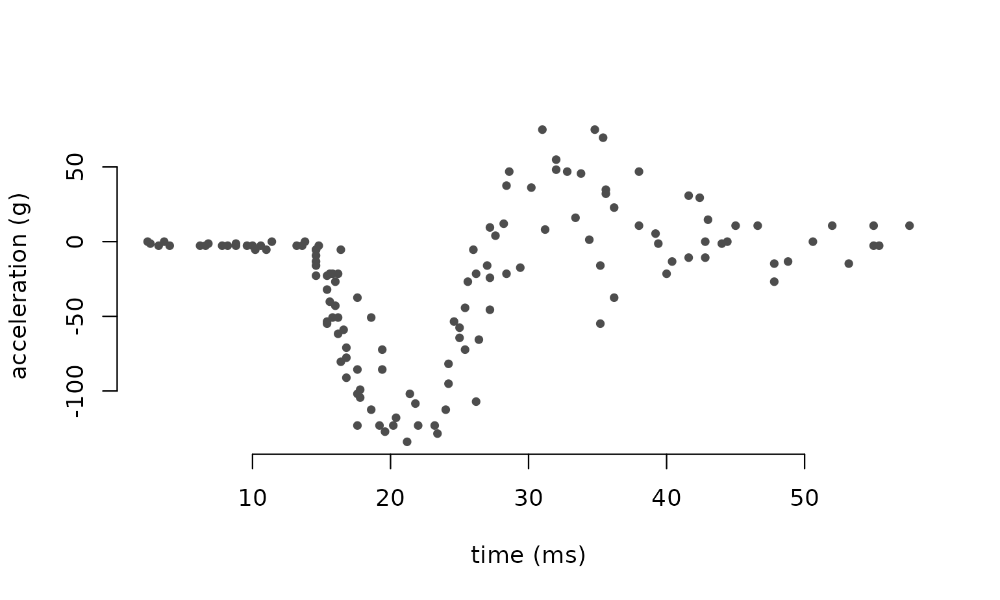
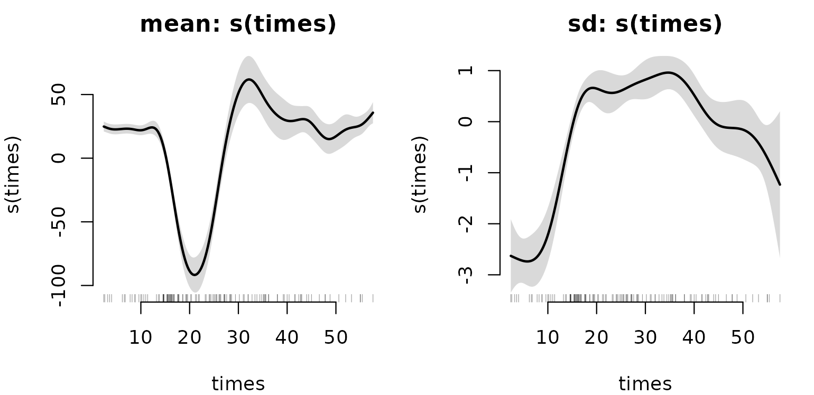
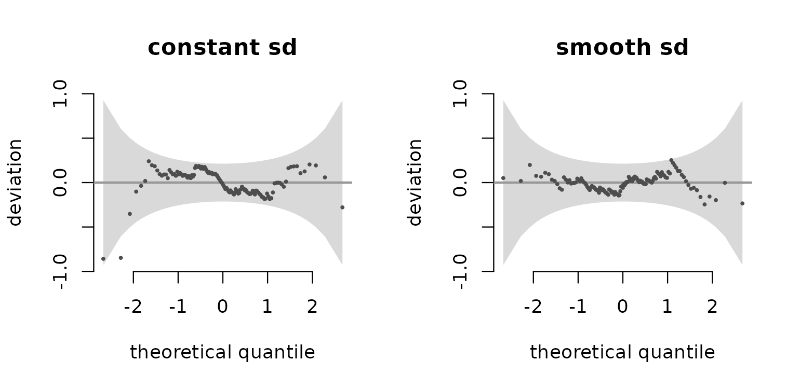
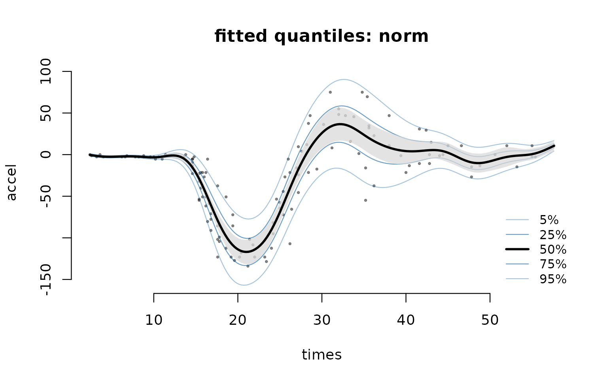
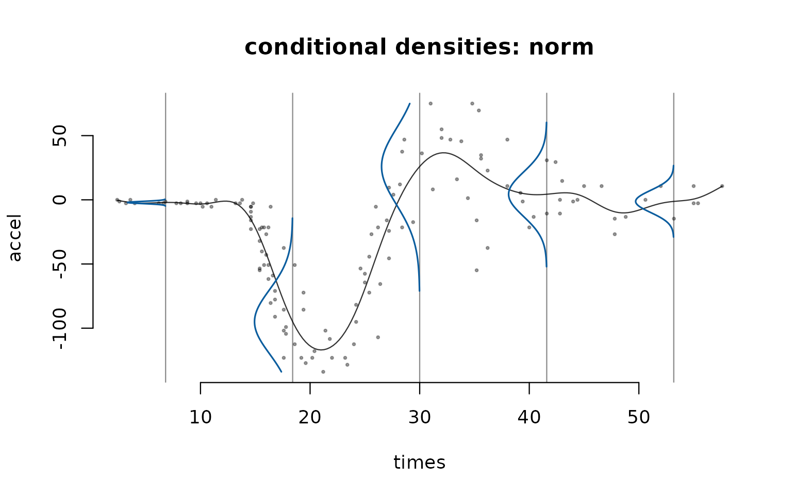

A regression model usually lets the mean depend on covariates and treats everything else about the distribution as constant. That is often wrong, and when it is, the mean is not the part that misleads you: the intervals are.
gamRTMB fits models where every
parameter of a distribution can carry smooth terms. It is mostly glue —
mgcv builds the bases and penalties, RTMB
supplies automatic differentiation and the Laplace approximation, and
RTMBdist supplies the log-densities — so the interfaces
should feel familiar if you have used either.
The data
MASS::mcycle records head acceleration in a simulated
motorcycle crash: 133 measurements of accel against
times, in milliseconds after impact. It is the standard
example of a mean that is hard to model, and it also has an obvious
second feature.
data(mcycle, package = "MASS")
plot(accel ~ times, data = mcycle, pch = 20, col = "grey30", bty = "n",
xlab = "time (ms)", ylab = "acceleration (g)")
Before about 15 ms nothing happens and the points sit tightly on a flat line. Through the impact they swing violently and scatter widely, then settle. So the variance changes with time as clearly as the mean does. A model that assumes constant variance will report intervals that are far too wide early on and too narrow at the impact.
A first fit
The formula gives the response on the left and a list()
of one-sided formulas on the right, one per distributional parameter.
Parameters are named as the density names them, so a Gaussian is
mean and sd rather than generic labels:
fam("norm")
#> gamRTMB family: norm [dnorm, RTMB]
#> modelled: mean (identity), sd (log)
#> support: continuousLet the mean and the standard deviation each have their own smooth:
fit <- gamRTMB(accel ~ list(mean = ~ s(times, k = 20),
sd = ~ s(times, k = 12)),
data = mcycle)
fit
#> gamRTMB fit
#> family: norm (mean/identity, sd/log)
#> criterion: REML engine: laplace
#> converged: TRUE -REML: 587.0647 max|grad|: 1.97e-06
#> observations: 133
#> coefficients: 4 fixed (incl. null spaces), 28 penalized; 2 smoothing parameters
summary(fit)
#>
#> Family: norm [dnorm from RTMB]
#> Links: mean = identity, sd = log
#>
#> Formula:
#> mean ~ s(times, k = 20)
#> sd ~ s(times, k = 12)
#>
#> Parametric coefficients:
#> Estimate Std. Error z value Pr(>|z|)
#> mean:(Intercept) -25.20458 1.83426 -13.74 <2e-16 ***
#> sd:(Intercept) 2.57458 0.06542 39.36 <2e-16 ***
#> ---
#> Signif. codes: 0 '***' 0.001 '**' 0.01 '*' 0.05 '.' 0.1 ' ' 1
#>
#> Smooth terms:
#> term edf k sp
#> mean:s(times) 14.433 19 2.869e-06
#> sd:s(times) 7.578 11 0.008295
#>
#> Total EDF = 24.01 n = 133
#> -REML = 587.065 logLik = -531.138 AIC = 1110.30Both smooths are strongly non-linear: 14.4 and 7.6 effective degrees
of freedom out of the 19 and 11 the bases allow. The smoothing
parameters and EDFs come from a REML fit and agree with
mgcv to three decimals on models both packages can
express.

The right-hand panel is the point. The smooth on sd
spans about 3.7 units on the log scale, so the fitted standard deviation
varies by a factor of roughly 40 between the quiet stretch before impact
and the violent part.
Was constant variance really inadequate?
Fit the same mean structure with a constant sd and
compare. AIC() uses the log-likelihood at the fitted
coefficients with the total effective degrees of freedom, the same
convention mgcv and GAMLSS’s GAIC use, so the two are
comparable:
fit0 <- gamRTMB(accel ~ list(mean = ~ s(times, k = 20), sd = ~ 1),
data = mcycle)
c(constant_sd = AIC(fit0), smooth_sd = AIC(fit))
#> constant_sd smooth_sd
#> 1221.532 1110.299A difference of that size is not a close call.
Checking the distribution, not just the mean
Randomised quantile residuals turn the whole distributional assumption into something you can look at: if the model is right they are standard normal. The worm plot is the detrended QQ plot, which makes it easier to see where a distribution is wrong.
par(mfrow = c(1, 2))
set.seed(1)
plot(fit0, type = "worm", main = "constant sd")
plot(fit, type = "worm", main = "smooth sd")
The difference is real but not dramatic: with sd held
constant a few points in the lower tail leave the band, reaching about
1.4 times its width, while with a smooth sd nothing leaves
it at all. Worth noting how much weaker this evidence is than the AIC
gap of 111 — with 133 observations a worm plot is a blunt instrument,
and it is the more useful of the two for telling you where a
fit is wrong rather than whether.
Is a Gaussian the right shape at all?
With sd free the residuals look fine, but it is worth
asking whether the shape needs changing too. Switching family
is one argument: fam() derives the parameter names, links
and starting values from any suitable density, so nothing has to be
written per distribution.
A power exponential has a third parameter nu controlling
the tails, with nu = 2 being exactly Gaussian:
fam("powerexp2")
#> gamRTMB family: powerexp2 [dpowerexp2, RTMBdist]
#> modelled: mu (identity), sigma (log), nu (log)
#> support: continuous
fit_pe <- gamRTMB(accel ~ list(mu = ~ s(times, k = 20),
sigma = ~ s(times, k = 12),
nu = ~ 1),
family = fam("powerexp2"), data = mcycle)
c(nu = exp(coef(fit_pe)$beta[["nu:(Intercept)"]]))
#> nu
#> 3.693093
c(gaussian = AIC(fit), power_exponential = AIC(fit_pe))
#> gaussian power_exponential
#> 1110.299 1114.118nu comes out near 3.7 rather than 2, which points to
slightly lighter tails than Gaussian, but AIC does not prefer
the richer model. So there is no case for changing the shape once the
variance is free to vary. That is a useful negative result, and the
interesting part is the order in which you find it: fitted with constant
variance, the residuals of this data look heavy-tailed and would tempt
you towards a t distribution. The tails were never the problem
— the variance was.
Not every family will fit this data. Several heavier-tailed ones fail
to converge here, and gamRTMB says so plainly rather than
returning a fit that looks fine:
What the model is for
Once every parameter varies, the useful output is not a mean and a single standard error but covariate-dependent quantiles:

The curves contract and fan out with the fitted spread, which is exactly what the second smooth bought. The shaded band is the median curve’s own estimation uncertainty — not a prediction interval; the outer quantiles are that.
The fan summarises the fitted distribution by its quantiles. To see
the shape itself, type = "density" draws the fitted density
turned on its side at a few times. This works for every family,
including the many that have no quantile function:
plot(fit, type = "density")
predict() gives the quantiles as numbers, with standard
errors from the delta method across all the linear predictors at
once:
nd <- data.frame(times = c(10, 20, 30, 40))
q <- predict(fit, newdata = nd, type = "quantile", prob = c(0.1, 0.5, 0.9),
se.fit = TRUE)
round(cbind(times = nd$times, q$fit), 1)
#> times q0.1 q0.5 q0.9
#> [1,] 10 -5.1 -3.3 -1.5
#> [2,] 20 -146.0 -113.9 -81.7
#> [3,] 30 -12.3 26.0 64.3
#> [4,] 40 -24.1 4.3 32.6
round(q$se.fit, 2)
#> q0.1 q0.5 q0.9
#> [1,] 0.77 0.61 0.84
#> [2,] 8.96 6.82 9.40
#> [3,] 13.11 9.31 10.95
#> [4,] 9.13 7.67 10.19Note how the standard errors themselves vary with time: the fit is far more certain about the flat stretch than about the impact.
Two things worth knowing
Sharing smoothness. s(..., id = ) ties
smooths to one smoothing parameter, as in mgcv. Unlike
mgcv, the group may span distributional parameters — a way
of saying “the mean and the spread vary on the same scale”. On this data
that turns out to be a bad assumption, which is worth seeing:
fit_id <- gamRTMB(accel ~ list(mean = ~ s(times, k = 20, id = "t"),
sd = ~ s(times, k = 12, id = "t")),
data = mcycle)
edf(fit_id)
#> parameter term edf k sp id
#> 1 mean s(times) 2.826732 19 0.004979 t
#> 2 sd s(times) 9.950515 19 0.004979 t
c(free = AIC(fit), tied = AIC(fit_id))
#> free tied
#> 1110.299 1229.850Forced to a common smoothness, the mean drops from 14.4 to under 3
effective degrees of freedom while the sd smooth takes up
10, and AIC gets much worse. The two functions genuinely differ in
roughness. (Note also that the k column changes: sharing an
id links the bases as well, so both terms inherit
the first one’s basis dimension.)
Term selection. A smooth’s unpenalized null space
means an ordinary s() can shrink at most to a straight
line. A shrinkage basis (bs = "ts" or
bs = "cs") penalizes the null space too, so a term can
shrink away completely — useful when you are not sure a parameter needs
a covariate at all:
set.seed(1)
mcycle$noise <- runif(nrow(mcycle))
fit_sel <- gamRTMB(accel ~ list(mean = ~ s(times, bs = "ts", k = 20),
sd = ~ s(times, bs = "ts", k = 12) +
s(noise, bs = "ts", k = 8)),
data = mcycle)
edf(fit_sel)
#> parameter term edf k sp id
#> 1 mean s(times) 1.425396e+01 19 3.116e-06
#> 2 sd s(times) 7.190128e+00 11 0.01089
#> 3 sd s(noise) 3.401325e-07 7 3.697e+09The irrelevant covariate is driven to an effective degrees of freedom
of about 3e-07 — gone, not merely small — while the real terms are
untouched. An ordinary s() cannot do this: its unpenalized
null space means it can shrink at most to a straight line.
Where to go next
families() lists every distribution available, with its
parameters, links and whether residuals and quantiles are supported:
nrow(families())
#> [1] 71
families("^norm$|^t2$|gamma2|zipois")
#> family parameters needs support residuals
#> 1 gamma2 mean/log, sd/log continuous TRUE
#> 2 norm mean/identity, sd/log continuous TRUE
#> 3 t2 mu/identity, sigma/log, df/log continuous TRUE
#> 4 zigamma2 mean/log, sd/log, zeroprob/logit mixed TRUE
#> 5 zipois lambda/log, zeroprob/logit lattice TRUE
#> quantiles source
#> 1 TRUE RTMBdist
#> 2 TRUE RTMB
#> 3 TRUE RTMBdist
#> 4 FALSE RTMBdist
#> 5 FALSE RTMBdist?gamRTMB documents the fitting options, including
weights, offset() terms inside a parameter’s
formula, na.action, and method = "ML" as an
alternative to the default REML.
vignette("gamlss", package = "gamRTMB") fits three
standard GAMLSS examples both ways, and compares the fits and the
timings.